The Orange Man's Labyrinth Tutorial
Zit er een Game Developer in jou? 👾
Computerprogramma's lijken soms magie, maar eigenlijk is het gewoon
een geheime taal: Code. Vandaag leer jij de
taal spreken! In deze tutorial bouwen we stap voor stap een echte Text
Adventure RPG.
We gaan aan de slag met
HTML (het skelet),
CSS (de kleren) en
JavaScript (de hersenen). Aan het einde heb
jij een spel dat je aan al je vrienden kunt laten zien. Ready? Set...
Code!
Inhoudstafel
De survivalgids voor code-strijders
Wat hebben we allemaal nodig?
Voordat we een skelet gaan maken en hersenen gaan trainen, hebben we een plek nodig om te werken. Je hebt maar twee dingen nodig.
- Een Browser: (zoals Google Chrome of Firefox) Dit is het venster waar je straks jouw labyrint gaat bekijken en spelen.
-
Visual Studio Code: Dit is jouw
belangrijkste wapen. Het is een speciale tekstverwerker die jouw
code begrijpt.
Klik op deze link om het te downloaden
Nu we deze twee stappen hebben voltooid, moeten we enkel nog een mapje aanmaken. Dit is de schatkist van je game. Hier bewaren we straks al je code en afbeeldingen zodat de computer alles makkelijk kan terugvinden. Geef deze map de naam "mijn_labyrint".
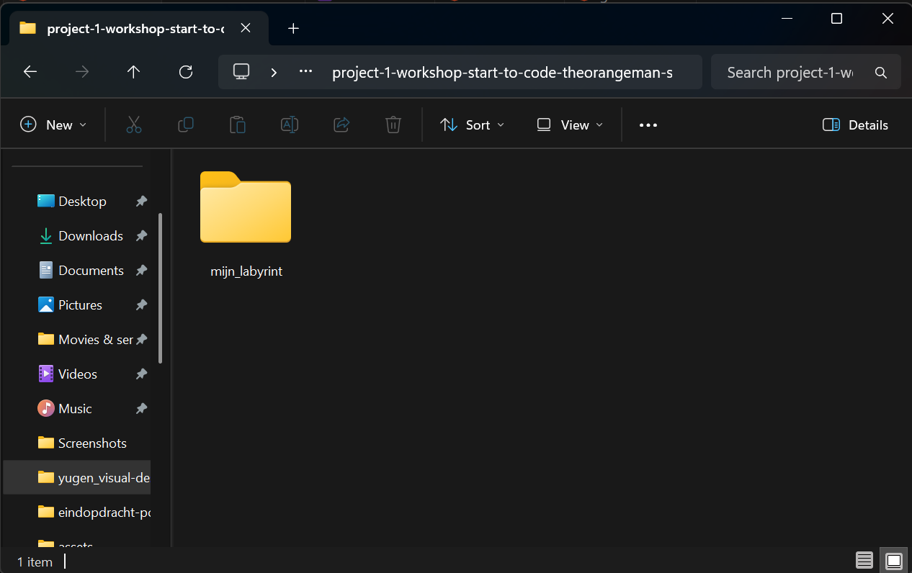
Als laatste hebben we natuurlijk ook de afbeeldingen nodig voor onze
game! Zonder monsters is het labyrint maar een saaie boel. Download
de afbeeldingen en zet ze in de map die je net hebt aangemaakt.
Klik hier om de afbeeldingen te downloaden.
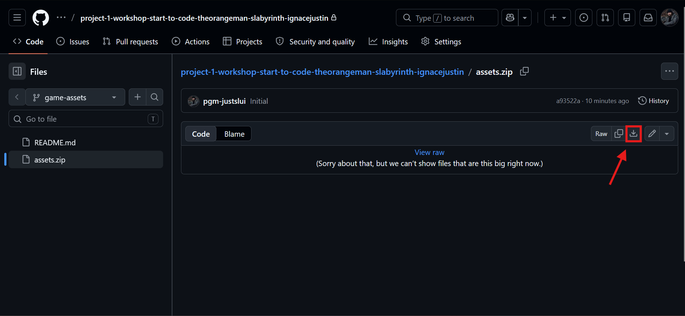
Nu we alles hebben gedownload kunnen we eindelijk starten.
Open VS Code op je computer en klik op "File -> open folder". Kies daarna de folder (mijn_labyrint) die we net hebben aangemaakt.
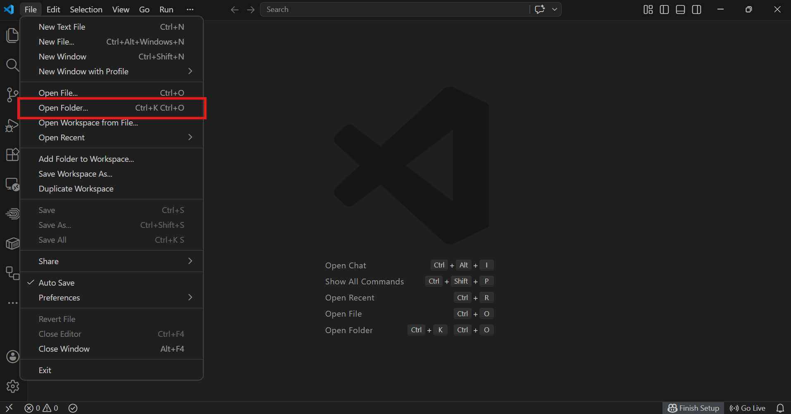
Mappenstructuur
Maak nu deze mappen en bestanden aan en dan is het voorbereidend
werk klaar!
Om een map aan te maken klik je op "New folder" naast je map
"mijn_labyrint" en om een bestand aan te maken klik je op
"New file". Of je kan het doen door op je rechtermuisknop te
klikken.
Vergeet de map assets ook niet goed te zetten in de juiste
map. Let goed op dat de namen en de plaats van de mappen precies
kloppen. Als er één letter anders is, kan de computer het niet
vinden en werkt je game niet. Gebruik geen hoofdletters en geen
spaties in de namen van de mappen. Dat vindt code niet zo leuk!
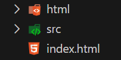
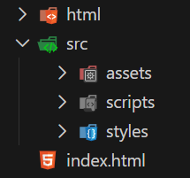
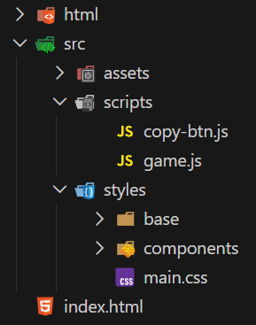
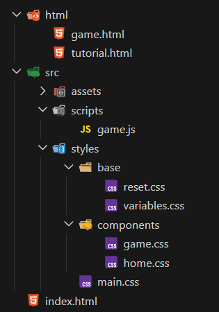
Stap 1: Het skelet bouwen (HTML)
Stel je voor dat je een mens tekent. Je begint niet met de kleur van de ogen of een cool shirt, maar met het skelet. De botten zorgen ervoor dat alles op de juiste plek blijft zitten. In de codewereld is HTML dat skelet. Het vertelt de computer precies wat er op de pagina moet komen. Zonder HTML weet de browser niet wat hij moet laten zien. Het is de basis van alles wat je op het internet ziet!
Tijd om te bouwen!
Kopieer de volledige code hieronder en plak deze in het bestand index.html die je zonet hebt aangemaakt.
<!doctype html>
<html lang="en">
<head>
<meta charset="UTF-8" />
<meta name="viewport" content="width=device-width, initial-scale=1.0" />
<link rel="preconnect" href="https://fonts.googleapis.com" />
<link rel="preconnect" href="https://fonts.gstatic.com" crossorigin />
<link
href="https://fonts.googleapis.com/css2?family=Instrument+Sans:ital,wght@0,400..700;1,400..700&family=Instrument+Serif:ital@0;1&display=swap"
rel="stylesheet"
/>
<link rel="stylesheet" href="../src/styles/main.css" />
<title>The orange man's labyrinth</title>
</head>
<body>
<header>
<nav class="nav">
<a class="nav__item" href="index.html">Home</a>
<a class="nav__item" href="html/game.html">Play Game</a>
<a class="nav__item" href="html/tutorial.html">Tutorial</a>
</nav>
</header>
<main>
<section class="desktop__only">
<h1 class="main__title">The orange man's labyrinth</h1>
<img
class="main__img"
src="src/assets/img_home.png"
alt="The White House with a labyrinth"
/>
<a class="main__link" href="html/game.html"
><span class="link__text">Start game</span></a
>
<div class="main__img-detail"></div>
</section>
<section class="mobile__only">
<h1 class="mobile__title">The orange man's labyrinth</h1>
<img
class="mobile__img"
src="src/assets/wall.png"
alt="The White House with a labyrinth"
/>
<section class="btns__placement">
<a class="main__link" href="html/game.html"
><span class="link__text">Start game</span></a
>
<a class="main__link" href="html/tutorial.html"
><span class="link__text">Tutorial</span></a
>
</section>
<div class="main__img-detail"></div>
</section>
</main>
<footer></footer>
</body>
</html>Kopieer de volledige code hieronder en plak deze in het bestand game.html.
<!doctype html>
<html lang="en">
<head>
<meta charset="UTF-8" />
<meta name="viewport" content="width=device-width, initial-scale=1.0" />
<link rel="preconnect" href="https://fonts.googleapis.com" />
<link rel="preconnect" href="https://fonts.gstatic.com" crossorigin />
<link
href="https://fonts.googleapis.com/css2?family=Instrument+Sans:ital,wght@0,400..700;1,400..700&family=Instrument+Serif:ital@0;1&display=swap"
rel="stylesheet"
/>
<link rel="stylesheet" href="../src/styles/main.css" />
<title>The orange man's labyrinth</title>
</head>
<body>
<header>
<nav class="nav">
<a class="nav__item" href="../index.html">Home</a>
<a class="nav__item" href="../html/game.html">Play Game</a>
<a class="nav__item" href="../html/tutorial.html">Tutorial</a>
</nav>
</header>
<main>
<section class="game">
<div class="game__wrapper">
<div class="border__content">
<p class="game__text" id="text"></p>
<div class="game__btn" id="options"></div>
</div>
<div class="bg-game"></div>
</div>
</section>
</main>
<script src="../src/scripts/game.js"></script>
</body>
</html>
Stap 2: De kleren en het uiterlijk (CSS)
Nu we ons skelet hebben, ziet het er nog een beetje kaal en botachtig uit. Met CSS gaan we dat veranderen! Als je weet dat HTML het skelet is, dan is CSS net als de kleren, haarkleur en schoenen die je kiest.
Het labyrint vorm geven!
Ga naar de map src, dan naar styles en open het bestand main.css. Kopieer de code en plak ze erin.
@import "base/reset.css";
@import "base/variables.css";
@import "components/home.css";
@import "components/game.css";
@import "components/tutorial.css";Ga naar de map src, dan naar styles en dan naar base en open het bestand reset.css. Kopieer de code en plak ze erin.
/*
Artevelde hogeschool CSS Reset v0.2
Adapted version from Josh's Custom CSS Reset https://www.joshwcomeau.com/css/custom-css-reset/
*/
/*
1. Use a more-intuitive box-sizing model.
*/
*,
*::before,
*::after {
box-sizing: border-box;
}
/*
2. Remove default margin
*/
* {
margin: 0;
}
/*
3. Allow percentage-based heights in the application
*/
html {
height: 100%;
}
/*
Typographic tweaks!
4. Add accessible line-height
5. Improve text rendering
*/
body {
min-height: 100%;
line-height: 1.5;
-webkit-font-smoothing: antialiased;
}
/*
6. Improve media defaults
*/
img,
picture,
video,
canvas,
svg {
display: block;
max-width: 100%;
}
/*
7. Remove built-in form typography styles
*/
input,
button,
textarea,
select {
font: inherit;
}
/*
8. Avoid text overflows
*/
p,
h1,
h2,
h3,
h4,
h5,
h6 {
overflow-wrap: break-word;
}
Ga naar de map src, dan naar styles en dan naar base en open het bestand variables.css. Kopieer de code en plak ze erin.
:root {
--font-primary: "Instrument Serif", Serif;
--font-secondary: "Instrument Sans", Serif;
--color-primary: white;
--color-secondary: black;
--color-detail: red;
--color-nav: #0d112b;
--color-nav-darker: #050718;
--color-neutral: rgb(245, 245, 245);
--color-body-bg: #ebecf9;
--color-border: rgb(213, 213, 213);
--color-highlight: blue;
--color-highlight-variation1: rgb(255, 94, 0);
--color-highlight-variation2: rgb(9, 163, 50);
--color-highlight-variation3: rgb(106, 0, 255);
--shadow-border: 0 4px 15px rgba(0, 0, 0, 0.1);
}Ga naar de map src, dan naar styles en dan naar components en open het bestand game.css. Kopieer de code en plak ze erin.
.game {
width: 100%;
height: 100vh;
overflow: hidden;
}
.game__wrapper {
position: relative;
width: 100%;
height: 100%;
display: flex;
flex-direction: column;
justify-content: center;
align-items: center;
text-align: center;
}
.bg-game {
position: absolute;
top: 0;
left: 0;
width: 100%;
height: 100%;
background-image: url(../../assets/img_game.png);
background-size: cover;
background-position: center;
z-index: -1;
}
.game__text {
color: var(--color-primary);
font-family: var(--font-primary);
font-size: 2rem;
letter-spacing: 0.1rem;
font-weight: 700;
margin-bottom: 3rem;
z-index: 1;
text-shadow: 2px 2px 4px black;
max-width: 20rem;
margin-left: auto;
margin-right: auto;
}
.game__btn {
z-index: 1;
display: flex;
gap: 1rem;
display: flex;
justify-content: center;
}
#options button {
font-family: var(--font-secondary);
border: 2px solid var(--color-detail);
border-radius: 2rem;
background-color: var(--color-primary);
color: var(--color-detail);
padding: 1rem 2rem;
transition: 0.5s ease;
}
#options button:hover {
transform: scale(1.05);
transition: 0.3s ease;
}
.border__content {
border: 2px solid var(--color-secondary);
border-radius: 1.5rem;
background-color: rgba(0, 0, 0, 0.5);
padding: 1rem 2rem;
}
Ga naar de map src, dan naar styles en dan naar components en open het bestand home.css. Kopieer de code en plak ze erin.
.nav {
padding: 1rem;
background-color: var(--color-nav);
box-shadow: var(--shadow-border);
}
.nav__item {
margin: 1rem;
text-decoration: none;
font-family: var(--font-secondary);
font-weight: 700;
font-size: 1.5rem;
color: var(--color-primary);
position: relative;
display: inline-block;
}
.nav__item::after {
content: "";
position: absolute;
width: 100%;
transform: scaleX(0);
height: 2px;
bottom: -5px;
left: 0;
transform-origin: bottom right;
transition: 0.8s ease;
background-color: var(--color-primary);
}
.nav__item:hover::after {
transform: scaleX(1);
transform-origin: bottom left;
}
.desktop__only {
position: relative;
z-index: 0;
width: 100vw;
height: 100vh;
}
.main__title {
position: absolute;
z-index: 2;
font-family: var(--font-primary);
font-size: 4rem;
color: var(--color-primary);
top: 30%;
left: 50%;
transform: translate(-50%, -50%);
text-shadow: 2px 2px 4px black;
}
.main__img {
object-fit: fill;
z-index: 1;
width: 100%;
height: 100%;
}
.main__img-detail {
position: absolute;
bottom: 0;
right: 0;
z-index: 99;
background-image: url(../../assets/orange_man-removebg.png);
background-size: contain;
background-repeat: no-repeat;
height: 25rem;
aspect-ratio: 1/1;
pointer-events: none;
}
.main__link {
position: absolute;
z-index: 2;
top: 50%;
left: 50%;
transform: translate(-50%, -50%);
text-decoration: none;
border: 2px solid var(--color-detail);
border-radius: 2rem;
background-color: var(--color-primary);
color: var(--color-detail);
padding: 1rem 2rem;
transition: 0.5s ease;
}
.main__link:hover {
color: var(--color-primary);
background-color: var(--color-detail);
border: 2px solid var(--color-primary);
}
.main__link:active {
transform: translate(-50%, -50%) scale(1.5);
transition: 0.5s ease;
}
.link__text {
font-family: var(--font-secondary);
font-weight: 700;
}
.mobile__only {
display: none;
}
@media (max-width: 402px) {
.mobile__only {
display: block;
position: relative;
width: 100vw;
height: 100vh;
height: 100dvh;
}
.mobile__title {
position: absolute;
top: 4rem;
left: 50%;
transform: translateX(-50%);
width: 90%;
text-align: center;
z-index: 2;
font-family: var(--font-primary);
font-size: 3rem;
color: var(--color-primary);
text-shadow: 2px 2px 4px black;
}
.mobile__img {
height: 100vh;
width: 100vw;
z-index: 1;
object-fit: cover;
display: block;
}
.main__img-detail {
position: absolute;
width: 100%;
height: 40rem;
z-index: 3;
background-position: bottom right;
pointer-events: none;
}
.desktop__only {
display: none;
}
.nav {
display: none;
}
.btns__placement {
position: absolute;
top: 22rem;
left: 50%;
transform: translate(-50%, -50%);
z-index: 3;
display: flex;
flex-direction: column;
gap: 1rem;
width: 80%;
}
.btns__placement .main__link {
position: static;
transform: none;
margin: 0;
text-align: center;
width: 100%;
box-sizing: border-box;
z-index: 99;
}
}Stap 3: De hersenen van je game (JavaScript)
Nu hebben we een skelet met coole kleren, maar hij staat nog stil. Hij kan nog niet praten of lopen. Daar hebben we JavaScript voor nodig! JavaScript zijn de hersenen van je game. Het zorgt voor de actie: als de speler op een knop drukt, dan beslissen de hersenen naar welke kamer je gaat.
Wat doet deze code nu?
Selecteert de HTML-elementen waar we tekst en keuzes tonen.
We vertellen de computer eerst waar op het scherm de tekst en knoppen moeten komen. #text en #options zetten we in de HTML als id zoals op de foto's hieronder.
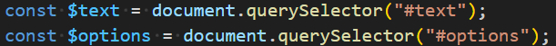
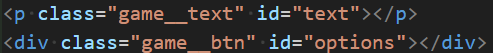
Houdt alle scènes van het spel bij.
Hier schrijven we het verhaal. Elke scènes heeft een eigen tekst en keuzes die je naar de volgende plek sturen.
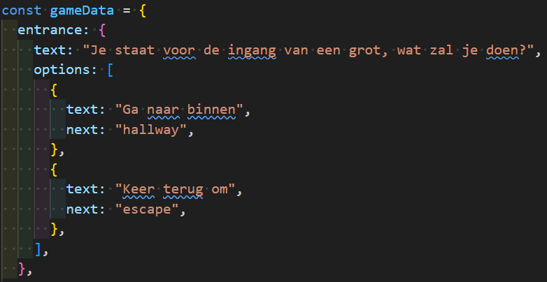
Deze functie toont voor iedere scène de juiste tekst en bijhorende keuzes
Dit is de motor van ons spel. Elke keer als we naar een nieuwe plek gaan zorgt deze functie ervoor dat alles op het scherm wordt ververst.
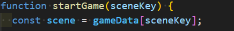
Toon de tekst van de huidige scène
De computer zoekt de tekst die bij de huidige scène hoort en plakt deze in het tekstvak dat we eerder hebben aangemaakt.
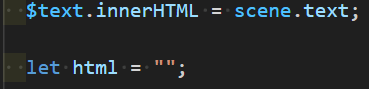
Maak voor elke optie een knop
We kijken welke keuzes er zijn en maken voor elke keuze een nieuwe knop. Zo krijgt de speler een knop om op te drukken.
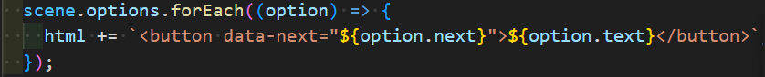
Plaats de knoppen in de HTML
De knoppen die we net hebben gemaakt zetten we nu allemaal samen in het juiste vak op onze website.
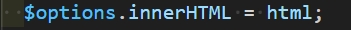
Selecteert alle nieuw aangemaakte knoppen
Nu de knoppen op het scherm staan moeten we ze allemaal samen vastpakken zodat we ze een taak kunnen geven.
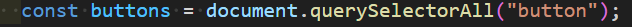
Voegt klikgedrag toe aan de knoppen om de navigeren naar een andere scene
We vertellen op welke knop hij moet letten. Als er op geklikt wordt moet hij vertellen naar welke scène hij nu moet gaan.
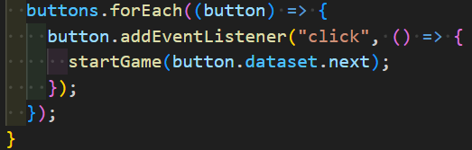
Start het spel bij de eerste scene
Zonder deze regel gebeurd er niks. Met dit vertellen we het spel dat het bij de ingang moet beginnen.
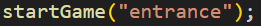
Kopieer deze code en plak die in game.js
const $text = document.querySelector("#text");
const $options = document.querySelector("#options");
const gameData = {
entrance: {
text: "Je besluit het eiland te verkennen. In het zand zie je voetsporen van de vorige strijders die het beest probeerden te verslaan.",
options: [
{ text: "Ga verder", next: "keyChoice" },
{ text: "Keer terug", next: "escapeEnding" },
],
},
keyChoice: {
text: "Half begraven in het zand zie je iets glinsteren, het is een roestige sleutel.",
options: [
{ text: "Neem de sleutel mee", next: "labyrinthEntrance_key" },
{ text: "Laat de sleutel liggen", next: "labyrinthEntrance_noKey" },
],
},
labyrinthEntrance_key: {
text: "Voor je verschijnt de ingang van het labyrint. De stenen poort torent boven je uit. In de verte hoor je een diep gegrom, alsof iets binnenin je aanwezigheid al heeft opgemerkt. Wanneer je dichterbij komt, schuift de poort langzaam open.",
options: [
{ text: "Betreed het labyrint", next: "hallway_key" },
{ text: "Keer terug", next: "escapeEnding" },
],
},
labyrinthEntrance_noKey: {
text: "Voor je verschijnt de ingang van het labyrint. De stenen poort torent boven je uit. In de verte hoor je een diep gegrom, alsof iets binnenin je aanwezigheid al heeft opgemerkt. Wanneer je dichterbij komt, schuift de poort langzaam open.",
options: [
{ text: "Betreed het labyrint", next: "hallway_noKey" },
{ text: "Keer terug", next: "escapeEnding" },
],
},
hallway_key: {
text: "Je stapt het labyrint binnen. Achter je sluit de poort langzaam opnieuw. Overal liggen resten van gevallen strijders. De gang splitst zich in twee richtingen.",
options: [
{ text: "Ga naar de East Wing", next: "eastWing_key" },
{ text: "Ga naar de West Wing", next: "westWing_key" },
],
},
hallway_noKey: {
text: "Je stapt het labyrint binnen. Achter je sluit de poort langzaam opnieuw. Overal liggen resten van gevallen strijders. De gang splitst zich in twee richtingen.",
options: [
{ text: "Ga naar de East Wing", next: "eastWing_noKey" },
{ text: "Ga naar de West Wing", next: "westWing_noKey" },
],
},
westWing_key: {
text: "In de West Wing verschijnen de geesten van gevallen strijders. In stilte wijzen ze je de weg naar de Ballroom.",
options: [
{ text: "Volg de geesten", next: "ballroom_key" },
{ text: "Ga terug", next: "hallway_key" },
],
},
westWing_noKey: {
text: "In de West Wing verschijnen de geesten van gevallen strijders. In stilte wijzen ze je de weg naar de Ballroom.",
options: [
{ text: "Volg de geesten", next: "ballroom_noKey" },
{ text: "Ga terug", next: "hallway_noKey" },
],
},
eastWing_key: {
text: "Je betreedt de East Wing. Overal liggen overblijfselen van mensen die probeerden te ontsnappen. Voor je strekt zich een donkere gang uit.",
options: [
{ text: "Ga verder", next: "lostEnding" },
{ text: "Ga terug", next: "hallway_key" },
],
},
eastWing_noKey: {
text: "Je betreedt de East Wing. Overal liggen overblijfselen van mensen die probeerden te ontsnappen. Voor je strekt zich een donkere gang uit.",
options: [
{ text: "Ga verder", next: "lostEnding" },
{ text: "Ga terug", next: "hallway_noKey" },
],
},
ballroom_key: {
text: "Je bereikt de Ballroom. Met de sleutel open je de zware deuren. In het midden van de zaal ligt een zwaard.",
options: [
{ text: "Neem het zwaard mee", next: "ovalOffice_sword" },
{ text: "Laat het zwaard liggen", next: "ovalOffice_noSword" },
],
},
ballroom_noKey: {
text: "Je bereikt de Ballroom, maar zonder sleutel blijven de deuren gesloten. Er is geen weg vooruit.",
options: [{ text: "Ga terug", next: "lostEnding" }],
},
ovalOffice_sword: {
text: "Je betreedt de Oval Office. Voor je staat de Minotaurus met zijn prachtige gouden lokken. Hij is niet gediend met je bezoek en wordt woedend.",
options: [
{ text: "Val aan", next: "goodEnding" },
{ text: "Sluit een deal", next: "dealEnding" },
{ text: "Vlucht", next: "lostEnding" },
],
},
ovalOffice_noSword: {
text: "Je betreedt de Oval Office. Voor je staat de Minotaurusmet zijn prachtige gouden lokken. Hij is niet gediend met je bezoek en wordt woedend.",
options: [
{ text: "Val aan", next: "badEnding" },
{ text: "Sluit een deal", next: "dealEnding" },
{ text: "Vlucht", next: "lostEnding" },
],
},
escapeEnding: {
text: "Je keert terug en overleeft, maar je missie blijft onvoltooid.",
options: [{ text: "Opnieuw spelen", next: "entrance" }],
},
lostEnding: {
text: "Je raakt verdwaald in het labyrint en deelt het lot van de andere strijders.",
options: [{ text: "Opnieuw spelen", next: "entrance" }],
},
badEnding: {
text: "De Minotaurus verslaat je zonder moeite. Je eindigt zoals de anderen voor je. Net voor je sterft, buigt hij zich naar je toe en fluistert: 'Anyone who thinks my story is anywhere near over is sadly mistaken.'",
options: [{ text: "Opnieuw spelen", next: "entrance" }],
},
goodEnding: {
text: "Je verslaat de Minotaurus en doorboort zijn hart. Het beest stort neer en blijft roerloos liggen. De goden belonen je voor je moed en doorzettingsvermogen. Je missie is voltooid.",
options: [{ text: "Opnieuw spelen", next: "entrance" }],
},
dealEnding: {
text: "Je streelt het ego van het beest en sluit een deal. Je leeft, maar als zijn dienaar.",
options: [{ text: "Opnieuw spelen", next: "entrance" }],
},
};
function startGame(sceneKey) {
const scene = gameData[sceneKey];
$text.innerHTML = scene.text;
let html = "";
scene.options.forEach((option) => {
html += `<button data-next="${option.next}">${option.text}</button>`;
});
$options.innerHTML = html;
const buttons = document.querySelectorAll("button");
buttons.forEach((button) => {
button.addEventListener("click", () => {
startGame(button.dataset.next);
});
});
}
startGame("entrance");
Nu zijn we klaar en kunnen we beginnen met het spel te spelen!
Klik op index.html en klik rechtsonder op "Go live". Nu start jouw computer zijn eigen server op en kan je het spel spelen!